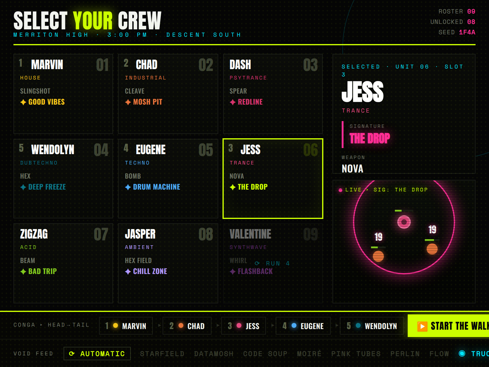
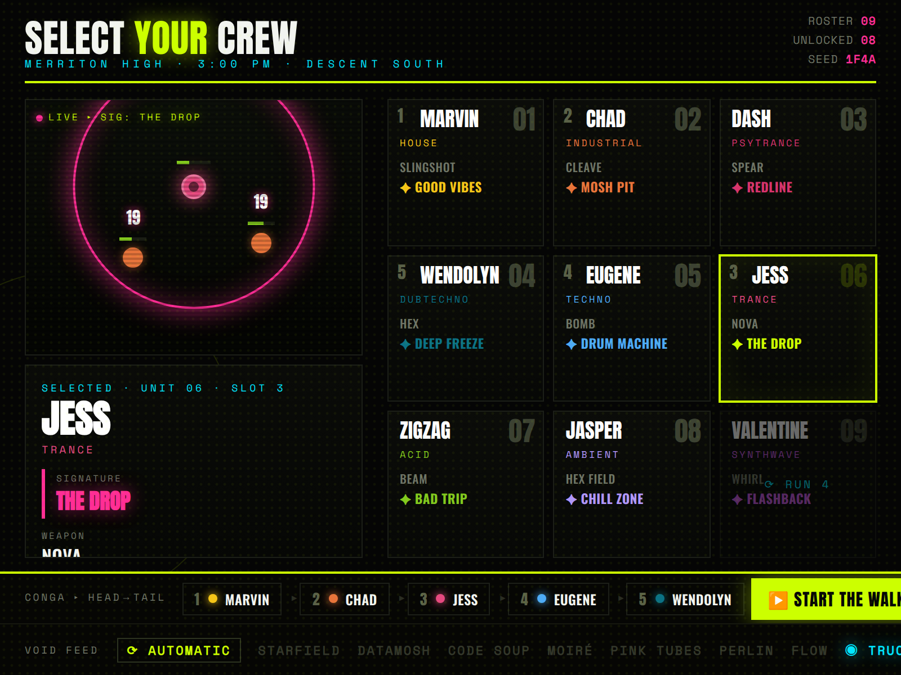
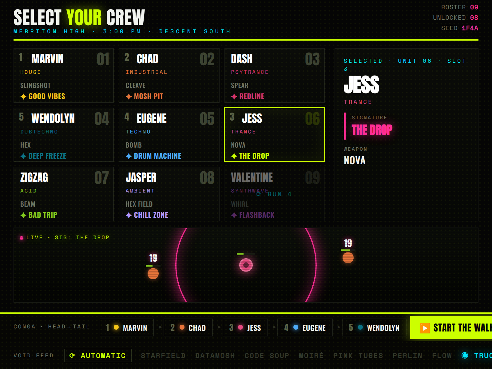
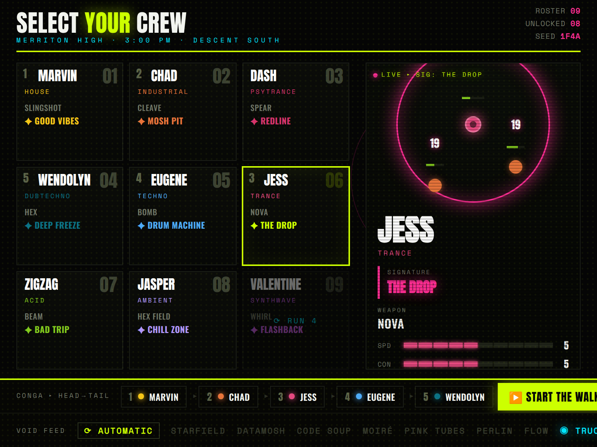

Same direction (black + fluoro, heavy condensed type, strobe/halftone, strict grid), four ways to seat the live action-preview. All three notes applied: the preview arena is added, the colored circle badges are gone (party order now uses recessed dark-grey numerals, like the unit number), and “⟳ Automatic” leads the background menu.




Two known nits to tidy when one's chosen: 3B clips the dossier's stat bars (tight tower), 3D clips the last stat row. Both are spacing fixes. Pick one (or mix — e.g. Booth's big arena with Console's full dossier) and I'll port it into the real partySelectScene canvas.